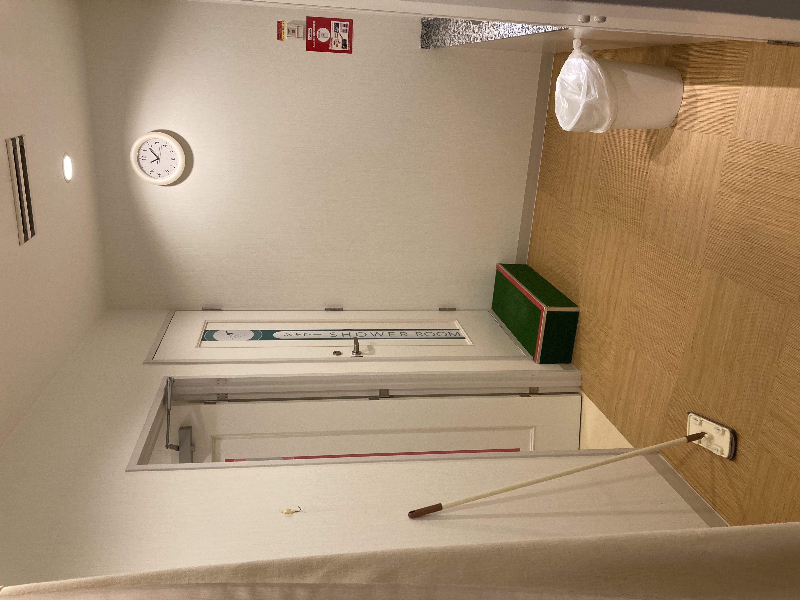
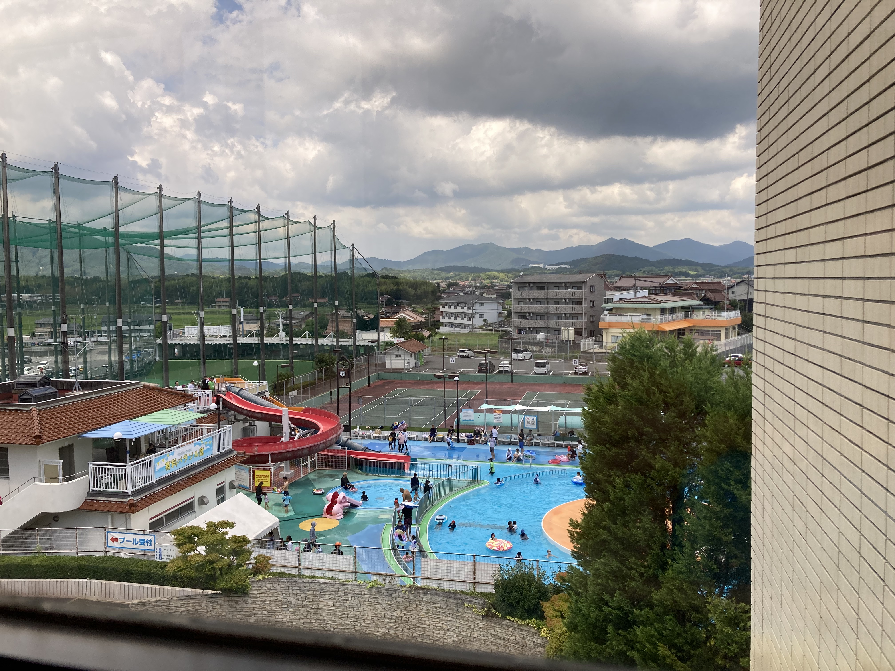
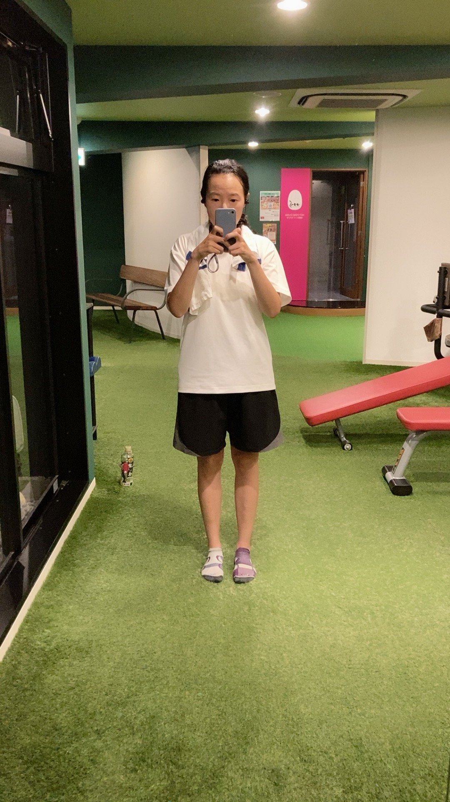
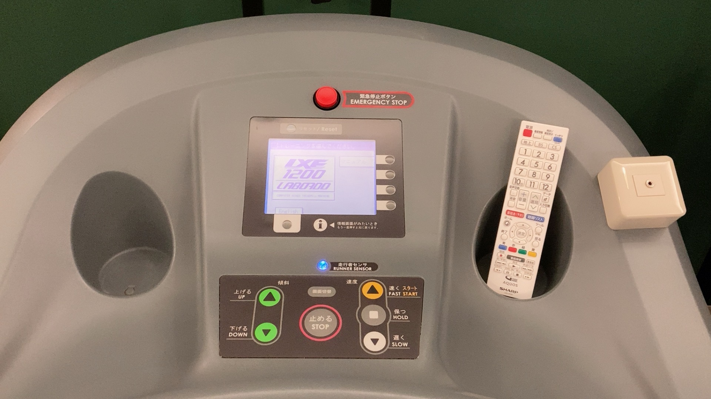
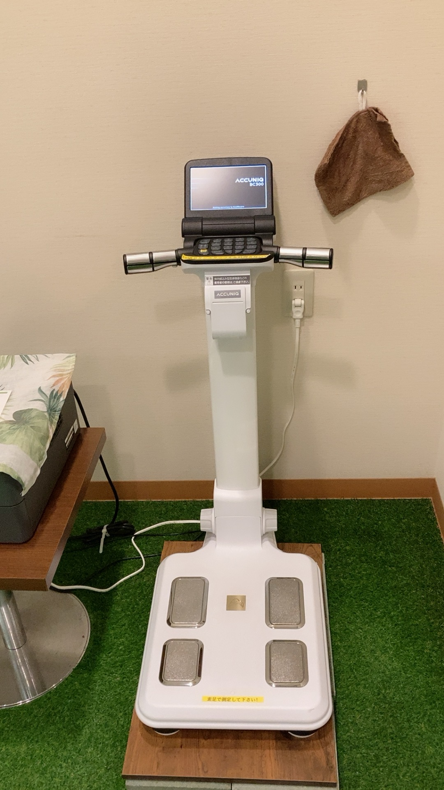
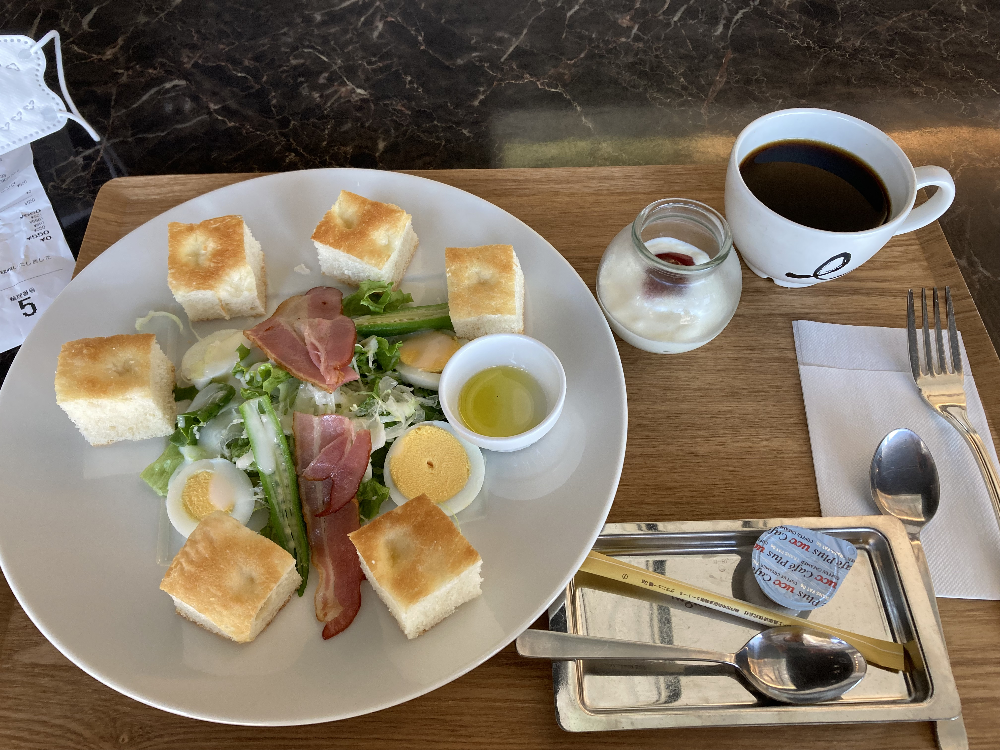
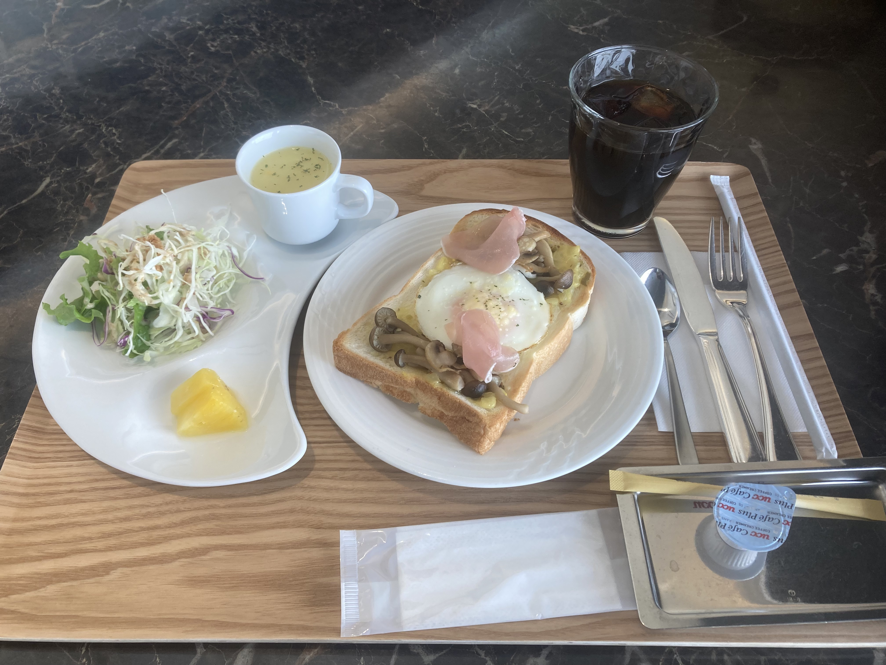
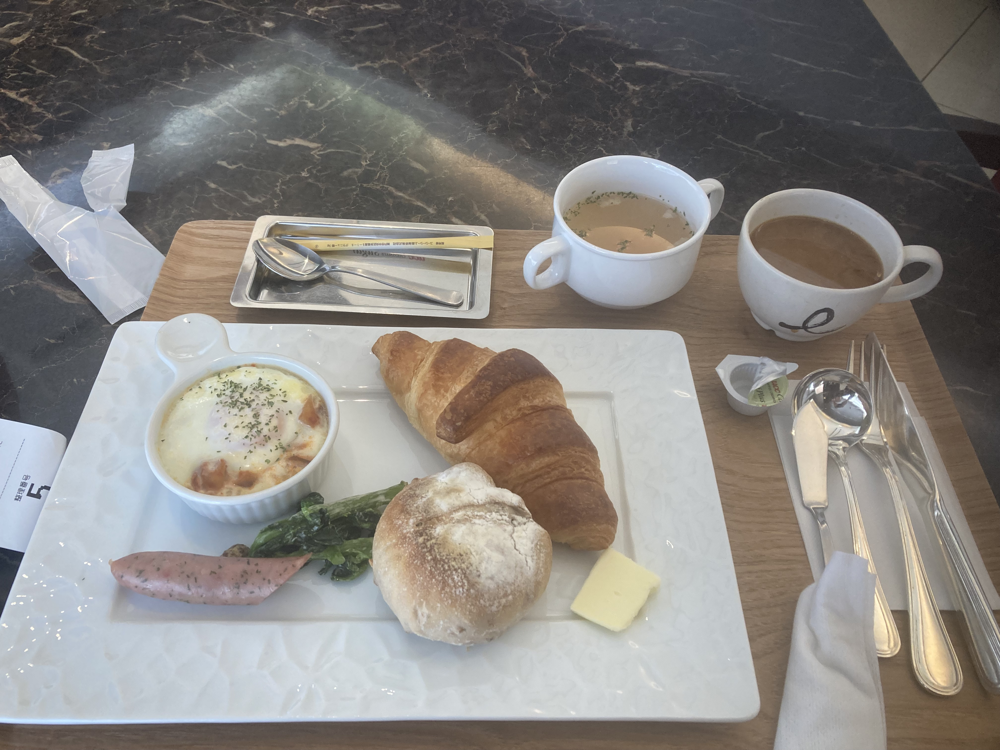
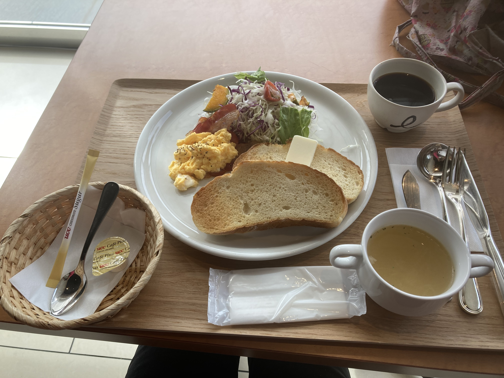

上一章
我日常生活，少不了就是跑步。从我大一开始到现在，不同阶段都有不同跑步计划。大学的时候不懂事跑的太多，真是天天跑。然后研究生时一周四天，再后来看书有训练计划，一周三天，一直维持到现在。我很骄傲的说，这些年来，除了天气原因，生病，刚出门回来后太累或者赛后休息外，真的完全没试过一次因为懒而不跑。为什么？不是为了比赛不是为了成绩，而是单纯的热爱。我只晨跑，所以平时都是起床就去健身房然后再上班，今天带大家看一下我平时去的健身房。
这个健身房mygym24，属于本地企业伯河集团。学校对面的酒店就是这个集团的。2017年5月开了第一家健身房，在学校附近的youme town对面，后来开了大型的靠近车站那边，还有就是酒店里面的。我原来一直去youme对面的，偶尔去最大那家（这家有脂肪检查仪器，后来我每个月去一次测量）。直到后来酒店推出550早餐，我想试试。去过一次发现特别人少，很舒服，之后就一直都去酒店了。酒店的健身房最小，但我就只跑步，不用其他也就无所谓。其实之前也有朋友告诉我酒店那里很少人。但习惯了youme对面的，人都有惯性，没大不好就不想变。直到550元的早餐才推动了我改变。现在我们就来看看酒店的健身房。
有段时间我很早去健身房。9点完全完成还在麦当劳等开门吃早餐。不过后来晚了，有时候快10点才完成。

这条时酒店到学校的路。

酒店停车场

酒店门口

健身房内部


大家看看我左小腿比右的肌肉，而且也比较直。


这台跑步机我很熟悉，德国用一样的牌子，不过这台能打游戏的过的不能。德国的经常坏，这台也坏了超过一个月没换。欣赏日本说的清清楚楚，坏的原因，什么时候修好也说明，这令人觉得问题有人在管，令人安心。

洗澡间

健身房出来，等电梯时能看到游泳池。每年7月中到8月底开放。健身房会员免费。我2022年去过几个，第一次玩的时候勾起了我之前一年的海滩回忆，之后我想再去海滩（原来2022没计划的）。游泳池的滑梯只有小朋友玩，我很好意思河他们抢。2023年一直都很热我就没去，不过滑梯的经历我很深刻，以致我回港后也想玩游泳池话题。不过香港救生员不足，直到2024年6月底我心愿还没成。
现在我们看看大的健身房，在超市ハロズ(hallows)对面。


啊！被你们看到我穿错了袜子呢～

这里用的跑步机。

脂肪机

二维码可以用app扫

这大概是我最瘦的时候了，在离开之前的。
做完运动就是吃早餐的时候了。有段时间我都吃youme的麦当劳。这家麦当劳没专门的早餐，9点才开。日本的麦当劳好处是可以吃沙拉，香港只有土豆饼。后来吃腻了就在办公室吃。酒店有550元早餐就每个月来一次（每月换一次菜式的）。再后来这早餐没有了我又回办公室吃。现在来看看酒店550元的早餐，咖啡可以再来一杯（おかわり）。




这个炒蛋配吐司像港式早餐。

下一章